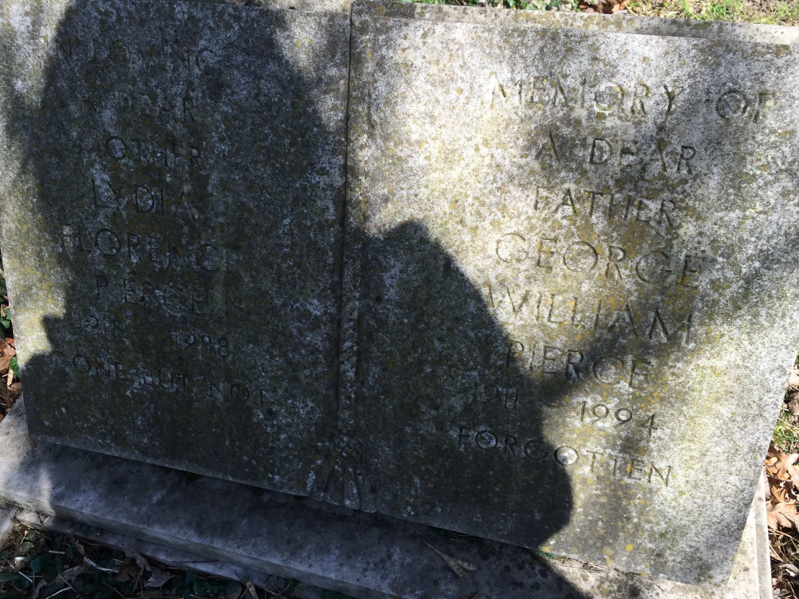
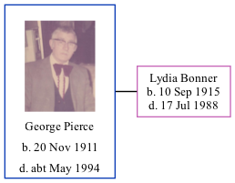

George William Pierce 1911 - c1994
[ Home ] | [ Calendar ] | [ Surnames Index ] | [ Family History ]George Pierce was born on Nov 20, 19111. He married Lydia Bonner in Edmonton, London, England on Jul 31, 1954.
He died c. May 1994 in Thanet, Kent, England1 and was buried at Margate Cemetery, Margate, Kent after May 1, 1994.
Citations
- England & Wales deaths 1837-2007 - Findmypast
Media
George Pierce - Lydia Bonner - marriage certificate

Lydia Florence Bonner - George William Pierce - he

George William Pierce
England & Wales marriages 1837-2008 - BMD/M/1954/3/AZ/001274/102
England & Wales marriages 1837-2008 - BMD/M/1954/3/AZ/000150/075
England & Wales deaths 1837-2007 Transcription - BMD-D-1994-5-80379191
Family Tree
Generated by Ged2Site. Last updated on Jul 20, 2025